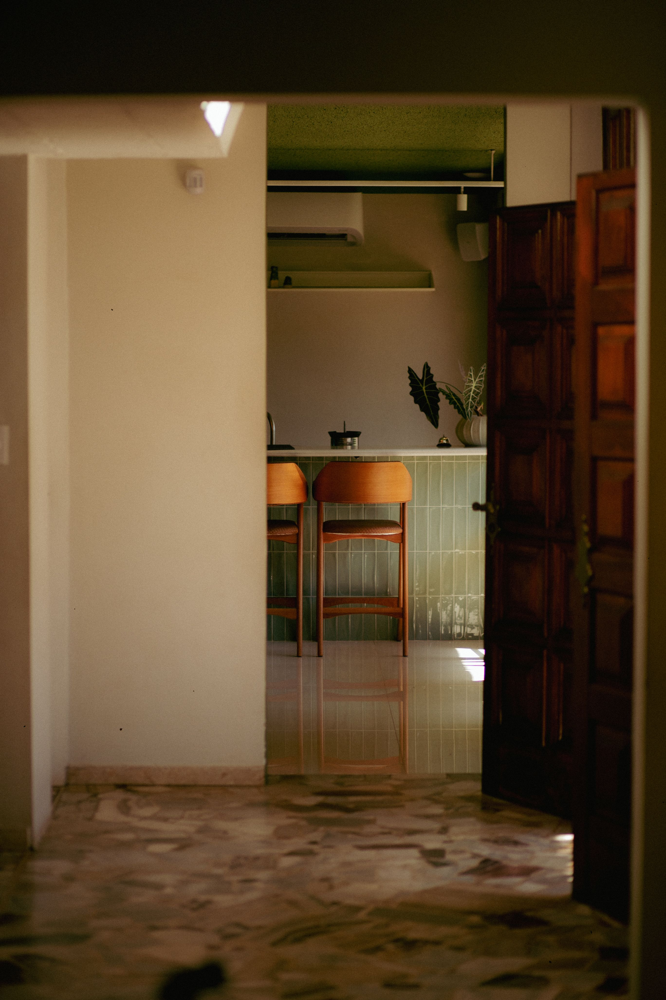
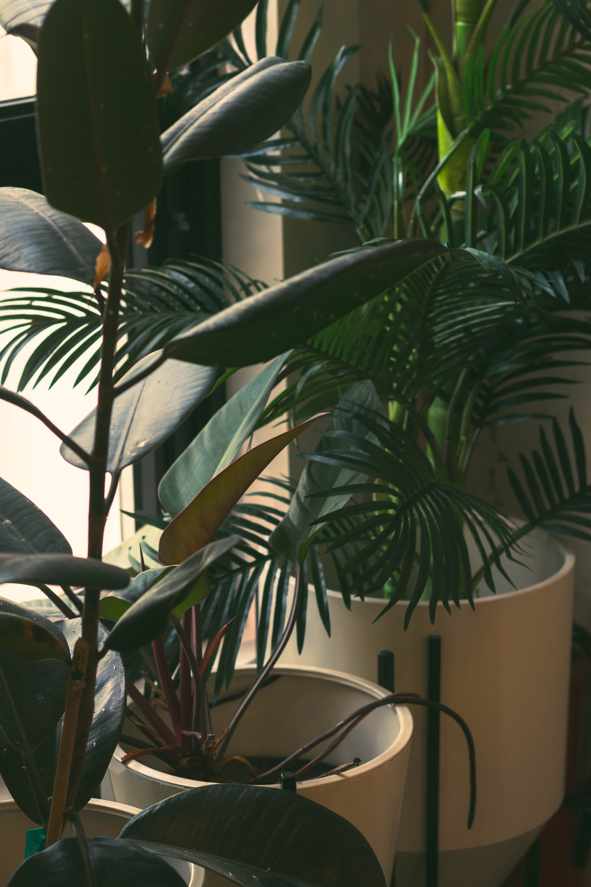

Create the moments that matter most.
Home can feel as simple as the kettle going in the morning, something good cooking in the oven and everyone gathering in the kitchen.
Little Details
It's the small things you choose, use and love that make a kitchen feel truly yours.

Everyday Comfort
Create a kitchen filled with the simple comforts that make everyday life feel like a dream.

Natural Touches
Bring in the warmth of natural materials, from worn wood to soft, tactile textures.

Little Moments
For the conversations that linger, meals shared around the table and moments that make you want to stay a little longer.